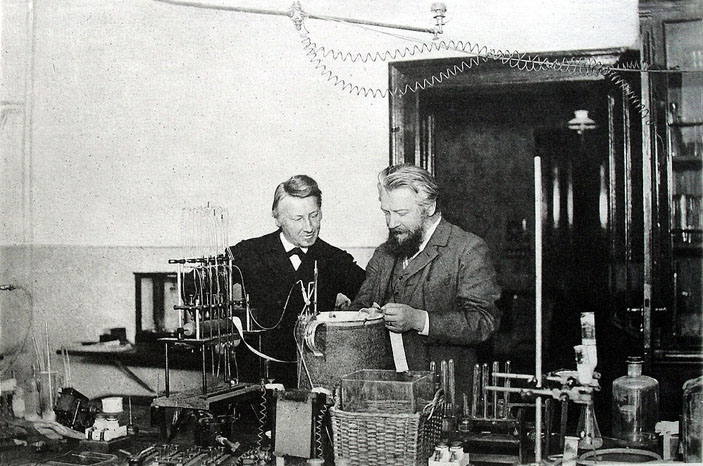
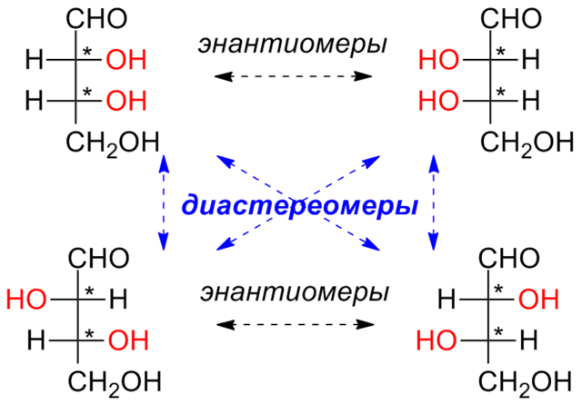
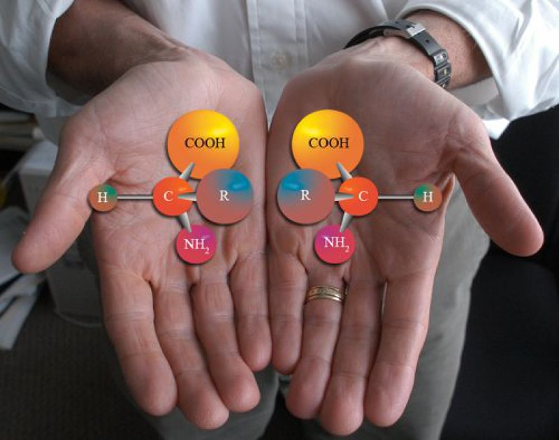

Что такое стереохимия?
🔬 Что такое стереохимия?
Стереохимия — это раздел химии, который изучает пространственное (трёхмерное) расположение атомов в молекулах. Это важно, потому что одинаковые по составу молекулы (изомеры) могут иметь разные свойства из-за различий в пространственной ориентации их атомов.
📦 Почему это важно?
Представь, что у тебя есть две перчатки — левая и правая. Они выглядят похоже, но взаимозаменяемыми не являются. Точно так же и в химии: молекулы с одинаковой формулой могут действовать по-разному в биологических системах или химических реакциях, если их структура отличается в пространстве.
История
🧪 1. Начало: Луи Пастер (1848 год)
Стереохимия зародилась благодаря французскому химику Луи Пастеру.
Он изучал винную кислоту и заметил, что её кристаллы бывают двух видов, зеркально отражающих друг друга.
Когда он разделил эти кристаллы вручную (!) и растворил по отдельности, оказалось, что:
Один раствор вращает плоскость поляризованного света вправо,
Другой — влево.
Это было первое доказательство существования хиральных молекул — молекул, не совпадающих с зеркальным отражением.
🧠 Вывод Пастера: пространственная (трёхмерная) структура влияет на физические свойства вещества.
🔬 2. Теория строения: Якобус Вант-Гофф и Жозеф Ле Бел (1874)
Они независимо друг от друга предложили революционную идею:

Атом углерода может связываться с четырьмя разными группами в виде тетраэдра.
Если все группы разные — углерод становится хиральным центром.
👉 Это стало основой модели хиральности и объяснило, почему существуют энантиомеры (зеркальные изомеры).
Подробней вы можете прочитать на этом сайте на этом сайте.
💊 3. XX век: развитие в медицине и синтезе
Химики начали понимать, что разные энантиомеры по-разному взаимодействуют с организмом.
Были созданы методы для разделения и синтеза нужных форм (например, хроматография, асимметрический катализ).
📌 Пример: Талидомид в 1950-х стал трагическим примером:
Один энантиомер помогал от бессонницы, другой вызывал тяжёлые врождённые пороки у детей. Это подтолкнуло к разработке энантиоочищенных лекарств.
⚛️ 4. Современность (XXI век)
Разработка трёхмерных моделей молекул, использование спектроскопии и компьютерной химии, применение стереохимии в нанотехнологиях, синтетической биологии и персонализированной медицине.
Энантиомеры и диастереомеры
🧬 Энантиомеры
Энантиомеры — это пара молекул, которые:
Являются зеркальными отражениями друг друга.
Не совпадают при наложении, как правая и левая руки.
🔑 Ключевые особенности:
Обязательно содержат хиральный центр — атом углерода, связанный с четырьмя разными группами.
Имеют одинаковые физические свойства (температуру плавления, плотность и т. д.), за исключением:
Вращения плоскости поляризованного света: одна форма вращает влево (левовращающий, обозначается как (–)), другая — вправо (правовращающий, (+)).
Биологической активности: один энантиомер может быть активным в организме, а другой — нет или даже быть токсичным.
🧪 Пример:
Молочная кислота имеет два энантиомера: L- и D- формы. В организме человека активна только L-молочная кислота.
🧬 Диастереомеры
Диастереомеры — это стереоизомеры, которые:
Не являются зеркальными отражениями.
Имеют два или более хиральных центра, но отличаются по конфигурации не во всех из них.
🔑 Ключевые особенности:
Не идентичны и не зеркальны.
Обладают разными физическими и химическими свойствами (в отличие от энантиомеров).
Часто имеют разные температуры плавления, точки кипения, растворимость и т.д.
🧪 Пример:
Тартаровая кислота — классический пример:
Существует в виде двух диастереомеров и одной мезо-формы.
Мезо-форма имеет два хиральных центра, но благодаря симметрии — ахиральна и не оптически активна.
🧠 Как запомнить:
| Характеристики | Энантиомеры | Диастереомеры |
|---|---|---|
| Зеркальные отражения | ✅ Да | ❌ Нет |
| Совпадают при наложении | ❌ Нет | ❌ Нет |
| Хиральный центр | ✅ Обязательно | ✅ Часто есть (2 и более) |
| Физические свойства | Почти одинаковы | Разные |
| Биологическая активность | Часто сильно отличается | Может отличаться |

Хиральность
🌀 Что такое хиральность?
Хиральность — это свойство объекта не совпадать со своим зеркальным отражением.
Если ты не можешь наложить предмет на его отражение в зеркале так, чтобы они полностью совпали — этот предмет хиральный.

📌 Пример из жизни: твои руки — они зеркальные, но если положить одну на другую — не совпадают. Правая не налезет на левую.
🧪 Хиральность в химии
В химии хиральная молекула — это такая, которая не совпадает со своим зеркальным отражением. Чаще всего хиральность появляется из-за хирального атома углерода.
🔹 Хиральный атом углерода (центр хиральности)
Это атом углерода, у которого четыре разных заместителя. Он обозначается как C*.
Если к атому C* присоединены группы: H, OH, CH₃ и Cl — все разные, то он хиральный.
🔄 Зеркальные формы — энантиомеры
Если молекула хиральна, то она существует в двух формах:
Энантиомеры — зеркальные отражения друг друга.
Обозначаются как (R) и (S), или L- и D-.
У них одинаковая химическая формула, но разное расположение в пространстве.
🧠 Важно: Наше тело часто «распознаёт» только один из энантиомеров. Другой может быть неактивен или даже вреден.
🌀 Примеры хиральности в жизни
💊 Лекарства:
Ибупрофен: Только одна из форм эффективно обезболивает.
Талидомид: Одна форма лечит бессонницу, другая — вызывает врождённые пороки у детей.
🍋 Ароматы:
У лимонена две формы:
Одна пахнет лимоном,
Другая — апельсином!
🧠 Как запомнить?
Хиральность = не совпадает с зеркалом
Нужен углерод с 4 разными группами
Такие молекулы = энантиомеры
Биологическая активность зависит от формы!
Значение в науке и медицине
Значение в науке и медицине
🧬 Значение в науке
1. Фармацевтика
Хиральность — один из важнейших факторов в разработке и производстве лекарств.
Энантиомеры (зеркальные формы одной молекулы) могут вести себя по-разному в организме.
Один из них может быть лечебным, а другой — неактивным или даже токсичным.
📌 Пример:
Ибупрофен: продаётся как рацемическая смесь, но только один энантиомер обладает противовоспалительным действием.
Талидомид: в 1950-х использовался от бессонницы при беременности. Один энантиомер был безопасен, другой — вызывал врождённые пороки развития у плода.
2. Биохимия и биология
Все биологические молекулы — белки, ферменты, ДНК — хиральны.
Ферменты "узнают" только одну пространственную форму молекул-субстратов.
Например, в нашем организме активна только L-форма аминокислот.
🧠 Представь: если молекула как "ключ", то её хиральность — это "правильный изгиб зубчиков". Только один ключ подойдёт к замку-ферменту.
3. Катализаторы и синтез
В химии часто нужно получить только один энантиомер вещества.
Используются асимметрические катализаторы, которые создают хиральные соединения в нужной форме.
Это важно для эффективности и безопасности новых веществ (например, в агрохимии, пищевой и косметической промышленности).
4. Нанотехнологии и материалы
Хиральные молекулы могут самоорганизовываться в спирали, важные для создания наноструктур.
Используются в оптике (например, для создания хиральных сенсоров или фильтров света).
🧪 Значение в медицине
✔ Безопасность и эффективность лекарств
Перед регистрацией нового препарата проверяют каждый энантиомер на безопасность.
Современные препараты часто содержат только активную форму (энантиоочищенные препараты).
💡 Раньше лекарства выпускались как рацематы (смесь 50/50 двух форм), но теперь это считается устаревшим подходом.
✔ Индивидуальная чувствительность организма
Разные люди могут по-разному усваивать энантиомеры.
Это важно в персонализированной медицине, где лечение подбирается под особенности конкретного пациента.
Практика
Вы можете выполнить задания и попрактиковаться на этом сайте.
Видеоуроки
Для большого углубления можете посмотреть это видео.